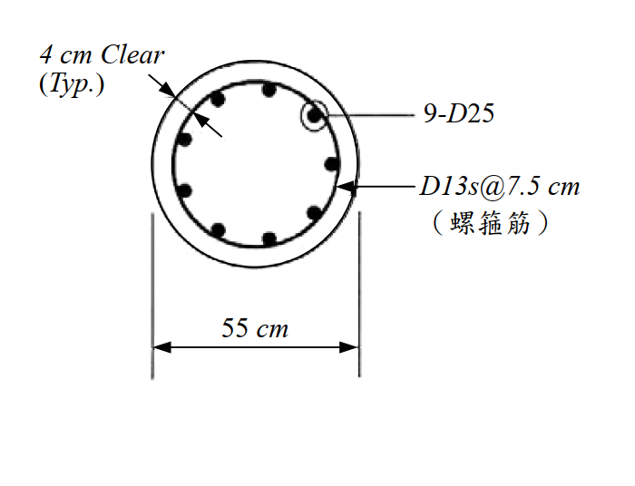
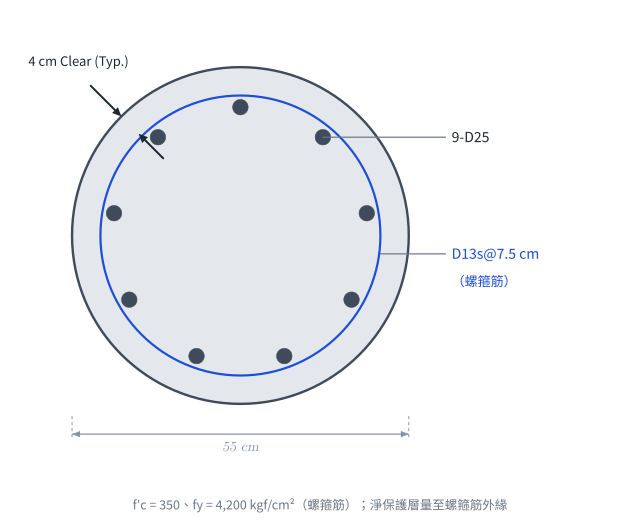

📄 題目正本：考卷原文・附圖・判讀清單（已確認）
SD-2009-4 題目正本
本檔只記錄考卷上寫了什麼、圖上畫了什麼，不含任何解法。解析見同資料夾
SD-2009-4.md。
判讀清單經使用者確認前，狀態為「待確認」；確認後本檔原則上不再修改（改動須回考卷原圖並記 log）。
| 項目 | 內容 |
|---|---|
| 考卷 | raw/exams/SD-2009_結構動力分析與耐震設計.pdf，第 1 頁（全一頁），第四題（頁面右下） |
| 考年 | 2009（民國98年）專技高考結構工程技師「結構動力分析與耐震設計」 |
| 配分 | 25 分 |
| 附圖 | SD-2009-4-fig-1.png（舊擷取，完整、無游標；考卷附圖為內嵌點陣影像，500 dpi 重擷取不增加資訊，未重擷取） |
| 判讀狀態 | 已確認（2026-11-16，使用者授權依 Claude 建議。原轉錄：2026-11-16 轉錄；PyMuPDF 110 dpi 整頁＋500 dpi 局部放大，PDF 文字層核對原文；盲讀於開啟解析前完成） |
1. 考卷原文（逐字）
四、依結構混凝土設計規範，螺箍筋之體積比 $\rho_s$ 不得小於下式之值：
$$\rho_s = 0.45\left(\frac{A_g}{A_c}-1\right)\frac{f'_c}{f_y}$$
式中 $f_y$ 為螺箍筋設計所用之規定降伏強度，$f'_c = 350\ \mathrm{kgf/cm^2}$，$f_y = 4{,}200\ \mathrm{kgf/cm^2}$。檢核右方配置之箍筋圖是否符合結構混凝土設計規範。（25 分）
2. 考卷給的公式、附表與參數
- 考卷印出的公式：$\rho_s = 0.45(A_g/A_c-1)\,f'_c/f_y$（照錄；$A_g$、$A_c$ 考卷未另行定義）。
- 給定：$f'_c=350$ kgf/cm²、$f_y=4{,}200$ kgf/cm²（螺箍筋）；圖上：柱外徑 55 cm、淨保護層 4 cm（Typ.）、縱筋 9-D25、螺箍筋 D13，間距（螺距）7.5 cm。
- 考卷沒有給：柱軸力、柱是否為韌性（特殊）抗彎構架柱、縱筋 $f_y$（只說 $f_y$ 為螺箍筋所用）、鋼筋標稱直徑與面積、粒料最大粒徑、柱高。
- 卷首注意事項：㈠可以使用電子計算器，但需詳列解答過程。㈡不必抄題，作答時請將試題題號及答案依照順序寫在試卷上，於本試題上作答者，不予計分。㈢下列問題之相關公式、物理常數、符號意義及設計參數未提及時，請自行依規範作合理推斷或假設。考試時間：2 小時。
3. 附圖

證據圖 SD-2009-4-fig-1.png
圖面文字照錄：4 cm Clear (Typ.)、9-D25、D13s@7.5 cm、（螺箍筋）、55 cm
4. 判讀清單
| # | 項目 | 判讀 | 圖上／題文依據 | 把握 |
|---|---|---|---|---|
| 1 | 是否須做耐震（韌性柱）圍束檢核 | 考卷未說明柱的構架類別；科目為耐震設計且卷首要求「未提及時依規範合理假設」→ 定案：主線檢核公式所示圍束量＋規範一般螺箍筋規定（淨間距、最小號數），耐震韌性柱的額外下限另列檢核並寫明假設 | 題文只說「依結構混凝土設計規範」；卷首注意㈢ | 不確定（解讀）；定案如左 |
| 2 | 考卷公式的規範版本 | 照錄考卷式；依本庫規範版本政策，主線改用現行台灣混凝土結構設計規範對應式（式形相同，$A_c$ 即 $A_{ch}$，量至螺箍筋外緣），差異於解析 §5 註明 | 題文公式；根目錄 CLAUDE.md「規範版本」 | 確定（解讀） |
| 3 | 「4 cm Clear」量測位置 | 柱外表面至螺箍筋外緣的淨保護層 4 cm（兩箭頭分別頂在外圓與內圓線上） | 500 dpi：箭頭尖端位於外圓線與內圓線 | 確定（解讀） |
| 4 | 柱外徑 | 55 cm（尺寸線兩端對齊外圓左右切線） | 500 dpi：延伸線切外圓 | 確定 |
| 5 | 縱筋 | 9 根 D25，沿螺箍筋內側均布 | 圖上數得 9 個黑點；標註 9-D25 | 確定 |
| 6 | 螺箍筋 | D13，螺距（中心距）7.5 cm；「s」為 spiral 記號 | 標註 D13s@7.5 cm（螺箍筋） | 確定（解讀） |
| 7 | 材料 | $f'_c=350$、$f_y=4{,}200$ kgf/cm²（$f_y$ 為螺箍筋） | 題文 | 確定 |
| 8 | 所求 | 檢核此螺箍筋配置是否符合規範（判定合格與否） | 題文 | 確定 |
| 9 | 考卷沒有給 | 軸力、構架類別、縱筋強度、鋼筋面積表、粒料粒徑 | 題文 | 確定 |
轉錄：2026-11-16（SD-U3-1 題目正本推廣・組 U3-1-G1）
確認：2026-11-16 使用者授權依 Claude 建議確認（SD-U3-1 題目正本推廣・組 U3-1-G1，關卡一）
考題編號：SD-2009-4
主分類： SD-U3-1 結構耐震設計（含RC結構與鋼結構）
副分類： SD-U2-2 建築耐震設計規範
分析方法： 概念題（含計算）——RC圓形柱螺箍筋體積比檢核
標籤： RC耐震設計 圓形柱 螺箍筋 體積比ρs 圍束要求 核心面積 規範檢核 D13 D25 韌性設計
1. 題目（考卷原文見題目正本）
考卷原文、公式／附表、附圖與判讀清單（已確認）見
SD-2009-4-problem.md。本節只列解題時最容易讀錯的地方與本解使用的記號；題意以題目正本為準。

重繪自考卷附圖，依題目正本判讀清單；本圖攔下的判讀錯誤：淨保護層 4 cm 量到螺箍筋外緣（不是量到縱筋中心）。
常見誤讀
| 項目 | 正確判讀 | 常見誤讀 |
|---|---|---|
| 淨保護層 | 4 cm 量至螺箍筋外緣，核心直徑 $D_c=55-2\times4=47$ cm（判讀 #3） | 量到縱筋中心或螺箍筋中心 |
| 縱筋 | 9-D25，沿螺箍筋內側均布（判讀 #5） | — |
| 螺箍筋 | D13，螺距（中心距）$s=7.5$ cm；淨間距另算（判讀 #6） | 把 7.5 cm 當淨間距 |
| 公式版本 | 考卷印出 $0.45(A_g/A_c-1)f'_c/f_y$；主線依現行台灣規範（$A_c$ 即 $A_{ch}$），韌性柱的額外下限另列並寫明假設（判讀 #1、#2） | 只檢核考卷式就判定合格 |
本解記號： $D_c$ 為核心直徑（量至螺箍筋外緣）；$A_{sp}$ 為螺箍筋單根面積；$s$ 為螺距。
2. 考題核心精神與出題者意圖（Core Concepts & Examiner's Intent）
核心觀念： 螺箍筋（spiral）的最小體積比要求來自「圍束設計（Confinement Design）」——螺箍筋提供的側向圍束壓力，補償了混凝土外殼（shell）在塑鉸區脫落後的強度損失，使核心混凝土維持延性行為。
出題者意圖：
- 測驗核心面積 $A_c$（= 至螺箍筋外緣的面積）與全截面積 $A_g$ 的正確定義
- 測驗螺箍筋實際體積比 $\rho_s$ 的計算公式（容積比定義）
- 測驗是否能進行規範的直接檢核（計算值 vs 規範要求值）
- 「檢核是否符合規範」不只體積比：還有螺箍筋淨間距、最小直徑、縱筋根數與鋼筋比等構造規定；耐震（韌性）柱另有 $0.12f'_c/f_{yt}$ 下限與間距上限
3. 解題戰略地圖與陷阱分析（Strategic Roadmap & Trap Analysis）
作戰計畫：
- 計算全截面積 $A_g$ 與核心面積 $A_c$（明確定義核心直徑）
- 代入公式計算規範要求 $\rho_{s,req}$
- 由螺箍筋配置（D13@7.5 cm）計算實際 $\rho_{s,actual}$
- 比較：$\rho_{s,actual} \geq \rho_{s,req}$？
- 構造檢核：淨螺距、螺箍筋直徑、縱筋根數與 $\rho_g$；韌性柱附加規定（另列，寫明假設）
關鍵陷阱：
| # | 陷阱 | 說明 | 應對策略 |
|---|---|---|---|
| ❶ | 核心面積的邊界定義 | 現行規範（112 年版第 25.7.3.3 節，記為 $A_{ch}$）：以螺箍筋外緣為界（不含外殼混凝土），核心直徑 $D_c = D - 2 \times \text{cover}$ | 核心直徑 $= 55 - 2 \times 4 = 47$ cm（到螺箍筋外面） |
| ❷ | 螺箍筋 ρs 的計算 | 體積比 = 螺箍筋體積 ÷ 核心混凝土體積，需用螺箍筋中心線直徑計算圓周長 | $d_{sp,c} = D_c - d_{bar} = 47 - 1.27 = 45.73$ cm |
| ❹ | 只檢核體積比 | 題目問「是否符合規範」，淨螺距（2.5–7.5 cm）、螺箍筋 ≥ 10 mm、縱筋 ≥ 6 根等構造規定也要檢核 | §4 Step 6 逐項列出 |
| ❸ | $A_g / A_c$ 比值 | 此比值應 > 1（如果 ≤ 1 代表柱斷面全是核心，不合理），直接影響 $\rho_s$ 需求大小 | 計算後確認 $A_g/A_c = 1.37 > 1$ |
3.5 變數層次分析（Variable Hierarchy Analysis）
複習提示：第一次解題後，在每個卡住的知識點旁標記
⚠；第二次複習時只看有⚠的項目。
最終目標
判斷 ρs,actual ≥ ρs,req？（是否符合規範）
本題關鍵公式（依計算順序）
$$\text{Step 1: } D_c = D - 2 \times \text{cover} = 55 - 8 = 47 \text{ cm}$$
$$\text{Step 2: } \rho_{s,req} = 0.45\left(\frac{A_g}{A_c} - 1\right)\frac{f'_c}{f_y} = 0.45 \times 0.3693 \times \frac{350}{4200}$$
$$\text{Step 3: } \rho_{s,actual} = \frac{\pi \cdot d_{sp,c} \cdot A_{sp}}{A_c \cdot s}$$
$$\text{Step 4: 比較 } \rho_{s,actual} \text{ vs } \rho_{s,req}$$
L1：題目直接給定
| 符號 | 數值 | 說明 |
|---|---|---|
| $D$ | 55 cm | 柱外徑 |
| cover | 4 cm | 保護層（至螺箍筋外緣） |
| $f'_c$ | 350 kgf/cm² | 混凝土抗壓強度 |
| $f_y$ | 4,200 kgf/cm² | 螺箍筋降伏強度 |
| 主筋 | 9-D25 | 直徑 2.54 cm |
| 螺箍筋 | D13@7.5 cm | 直徑 1.27 cm，間距 7.5 cm |
L2：需知識點推導
Step 1：幾何計算
| 符號 | 公式／來源 | 卡關? |
|---|---|---|
| $D_c$ | $D - 2 \times \text{cover} = 55 - 8 = 47$ cm | |
| $A_g$ | $\pi D^2 / 4 = \pi(55)^2/4$ cm² | |
| $A_c$ | $\pi D_c^2 / 4 = \pi(47)^2/4$ cm² |
Step 2：規範要求
| 符號 | 公式／來源 | 卡關? |
|---|---|---|
| $A_g/A_c$ | $55^2/47^2 = 3025/2209 = 1.3693$ | |
| $\rho_{s,req}$ | $0.45(1.3693-1)(350/4200) = 0.01385$ |
Step 3：實際體積比
| 符號 | 公式／來源 | 卡關? |
|---|---|---|
| $A_{sp}$ | D13：$\pi(1.27)^2/4 = 1.267$ cm² | |
| $d_{sp,c}$ | $D_c - d_{bar} = 47 - 1.27 = 45.73$ cm（螺箍筋中心線直徑） | |
| $\rho_{s,actual}$ | $\pi d_{sp,c} A_{sp} / (A_c \cdot s) = 0.01399$ |
L3：深層知識（不懂就卡住）
| 知識點 | 說明 | 卡關? |
|---|---|---|
| 螺箍筋圍束設計的物理意義 | 螺箍筋提供側向約束壓力 $f_l$，提升核心混凝土有效強度 $f'_{cc} > f'_c$，補償外殼脫落的強度損失 | |
| 核心面積 vs 全截面積 | $A_g/A_c > 1$ 的差值代表外殼混凝土（shell）比例；外殼越厚，需要越多螺箍筋才能補償 | |
| 體積比公式的推導 | $\rho_s = $ 單位長度螺箍筋體積 ÷ 單位長度核心體積 = $(\pi d_c A_{sp}) / (A_c \cdot s)$ |
4. 步驟化詳細計算過程（Step-by-Step Detailed Calculation）
Step 1：鋼筋截面積查表
D13 螺箍筋：
$$d_{bar} = 1.27 \text{ cm}, \quad A_{sp} = \frac{\pi(1.27)^2}{4} = \frac{\pi \times 1.6129}{4} = 1.267 \text{ cm}^2$$
D25 主筋（供參考，本題不需要）：
$$d_{bar} = 2.54 \text{ cm}, \quad A_{s,D25} = \frac{\pi(2.54)^2}{4} = 5.067 \text{ cm}^2$$
Step 2：計算截面幾何
全截面積 $A_g$：
$$A_g = \frac{\pi D^2}{4} = \frac{\pi \times 55^2}{4} = \frac{\pi \times 3025}{4} = 2375.8 \text{ cm}^2$$
核心直徑 $D_c$（至螺箍筋外緣）：
$$D_c = D - 2 \times \text{cover} = 55 - 2 \times 4 = 47 \text{ cm}$$
核心面積 $A_c$：
$$A_c = \frac{\pi D_c^2}{4} = \frac{\pi \times 47^2}{4} = \frac{\pi \times 2209}{4} = 1734.9 \text{ cm}^2$$
面積比：
$$\frac{A_g}{A_c} = \frac{2375.8}{1734.9} = 1.3693$$
Step 3：計算規範要求 ρs,req
$$\rho_{s,req} = 0.45\left(\frac{A_g}{A_c} - 1\right)\frac{f'_c}{f_y}$$
$$= 0.45 \times (1.3693 - 1) \times \frac{350}{4200}$$
$$= 0.45 \times 0.3693 \times 0.08333$$
$$= 0.45 \times 0.030775$$
$$\boxed{\rho_{s,req} = 0.01385 = 1.385\%}$$
Step 4：計算實際螺箍筋體積比 ρs,actual
螺箍筋中心線直徑：
$$d_{sp,c} = D_c - d_{bar,spiral} = 47 - 1.27 = 45.73 \text{ cm}$$
體積比定義（每一螺距長度）：
$$\rho_{s,actual} = \frac{\text{螺箍筋體積（每螺距）}}{\text{核心混凝土體積（每螺距）}} = \frac{\pi \cdot d_{sp,c} \cdot A_{sp}}{A_c \cdot s}$$
代入數值：
$$= \frac{\pi \times 45.73 \times 1.267}{1734.9 \times 7.5}$$
$$= \frac{3.14159 \times 45.73 \times 1.267}{13011.8}$$
$$= \frac{182.0}{13011.8}$$
$$\boxed{\rho_{s,actual} = 0.01399 = 1.399\%}$$
Step 5：規範檢核
$$\rho_{s,actual} = 0.01399 \quad \overset{?}{\geq} \quad \rho_{s,req} = 0.01385$$
$$0.01399 > 0.01385 \quad \checkmark$$
$$\boxed{\text{螺箍筋配置符合規範要求（裕度約 }1.0\%\text{）}}$$
Step 6：構造檢核（現行混凝土結構設計規範 112 年版）
| 項目 | 規定 | 本題 | 結果 |
|---|---|---|---|
| 螺箍筋直徑（第 25.7.3.2 節） | ≥ 10 mm（場鑄） | D13（12.7 mm） | ✓ |
| 螺箍筋淨間距（第 25.7.3.1 節） | ≥ max(2.5 cm, $\tfrac{4}{3}d_{agg}$)，且 ≤ 7.5 cm | $7.5 - 1.27 = 6.23$ cm | ✓（粒料粒徑未給，$d_{agg} \leq 4.6$ cm 即可） |
| 體積比（第 25.7.3.3 節） | $\rho_s \geq 0.45(A_g/A_{ch}-1)f'_c/f_{yt}$ | 0.01399 ≥ 0.01385 | ✓（Step 5） |
| 縱筋根數（第 10.7.3.1 節） | 螺箍筋柱 ≥ 6 根 | 9 根 | ✓ |
| 縱筋比（第 10.6.1.1 節） | $0.01A_g \leq A_{st} \leq 0.08A_g$ | $9\times5.067/2375.8 = 1.92\%$ | ✓ |
若為特殊抗彎矩構架柱（考卷未說明，假設檢核）：
| 項目 | 規定（第 18.4 節） | 本題 | 結果 |
|---|---|---|---|
| 縱筋比（第 18.4.4.1 節） | $0.01A_g \leq A_{st} \leq 0.06A_g$ | 1.92% | ✓ |
| 圍束量（表 18.4.5.4） | $\rho_s \geq \max[0.45(A_g/A_{ch}-1)f'_c/f_{yt},\ 0.12f'_c/f_{yt}]$ | $0.12\times350/4200 = 0.0100$，不控制；0.01399 ≥ 0.01385 | ✓ |
| 間距（第 18.4.5.3 節） | ≤ min(柱最小尺度/4, $6d_b$, $s_o$)，$s_o$ 介於 10–15 cm | min(55/4 = 13.75, 6×2.54 = 15.24, $s_o$ ≤ 15) ≥ 7.5 cm | ✓ |
| 高軸力附加式（表 18.4.5.4） | $P_u > 0.3A_gf'_c$ 時另需 $0.35k_f P_u/(f_{yt}A_{ch})$ | 考卷未給 $P_u$，無法檢核 | 註明假設 $P_u \leq 0.3A_gf'_c$ |
$$\boxed{\text{體積比與構造規定皆符合規範（OK）}}$$
計算結果彙整
| 項目 | 數值 |
|---|---|
| 柱外徑 $D$ | 55 cm |
| 核心直徑 $D_c$ | 47 cm |
| 全截面積 $A_g$ | 2375.8 cm² |
| 核心面積 $A_c$ | 1734.9 cm² |
| $A_g / A_c$ | 1.3693 |
| 規範要求 $\rho_{s,req}$ | 0.01385（1.385%） |
| 螺箍筋中心線直徑 $d_{sp,c}$ | 45.73 cm |
| D13 面積 $A_{sp}$ | 1.267 cm² |
| 螺距 $s$ | 7.5 cm |
| 實際體積比 $\rho_{s,actual}$ | 0.01399（1.399%） |
| 淨螺距 | 6.23 cm（2.5–7.5 cm） |
| 縱筋 | 9 根，$\rho_g$ = 1.92% |
| 檢核結果 | ✅ 符合規範（體積比裕度 1.0%，構造規定皆滿足） |
5. 關鍵爭議點與進階探討（Critical Issues & Advanced Discussion）
5.1 核心面積 Ac 的邊界——外緣 vs 中心線
現行《混凝土結構設計規範》（112 年版）第 25.7.3.3 節以 $A_{ch}$ 表示核心面積，以螺箍筋外緣為界（考卷式中的 $A_c$ 即此）：
$$D_c = D - 2 \times \text{(clear cover to outside of spiral)}$$
因此本題 $D_c = 55 - 2 \times 4 = 47$ cm。
若誤用主筋中心線（$D_c = 55 - 2 \times 4 - 2 \times 1.27/2 = 53.73$ cm 或類似值），將高估 $A_c$，低估 $\rho_{s,req}$，導致不保守的錯誤結論。
5.2 本題裕度極小的設計意義
$$\frac{\rho_{s,actual}}{\rho_{s,req}} = \frac{0.01399}{0.01385} = 1.010$$
裕度僅 1.0%，接近規範下限。這代表：
- 若改用 D13@8.0 cm 螺距，則 $\rho_s = 182.0/(1734.9 \times 8) = 0.01312 < 0.01385$，不符合規範
- 本配置 D13@7.5 cm 是剛好滿足的下限間距，考官刻意設計成「剛過」的題目
5.3 螺箍筋設計的物理意義
螺箍筋圍束機制：
$$f'_{cc} \approx f'_c + 4.1 f_l \quad \text{（Richart 公式）}$$
$$f_l = \frac{\rho_s f_y}{2} \quad \text{（側向約束壓力）}$$
以本題計算：
$$f_l = \frac{0.01399 \times 4200}{2} = 29.4 \text{ kgf/cm}^2$$
$$f'_{cc} \approx 350 + 4.1 \times 29.4 = 350 + 120.5 = 470.5 \text{ kgf/cm}^2$$
圍束後核心混凝土強度約提升至 471 kgf/cm²，比未圍束的 350 kgf/cm² 高 34%，足以補償外殼脫落（外殼面積 $= A_g - A_c = 640.9$ cm²，約佔總面積 27%）的強度損失。
5.4 規範版本與韌性柱附加規定
- 考卷印出的 $0.45(A_g/A_c-1)f'_c/f_y$ 與現行第 25.7.3.3 節式形相同（$A_c \to A_{ch}$、$f_y \to f_{yt}$），答案不受版本影響。
- 現行規範對特殊抗彎矩構架柱另有 $0.12f'_c/f_{yt}$ 下限與間距上限（§4 Step 6），本題皆滿足；$P_u > 0.3A_gf'_c$ 時的附加式因考卷未給軸力無法檢核，作答時應寫明假設。
5.5 考場答題要點
- 明確寫出核心直徑的定義（至螺箍筋外緣）
- 規範公式與實際計算分開呈現，結論明確（符合 or 不符合）
- 若僅到小數點兩位精度，ρs,actual ≈ 0.014 > ρs,req ≈ 0.014，仍應以多位數計算確認
- 體積比之外，補列淨螺距、螺箍筋直徑、縱筋根數與鋼筋比等構造檢核
修正日期：2026-11-16（§1 改為指向題目正本，重繪附圖 figs/SD-2009-4-fig-1-problem.svg）
修正日期：2026-11-16（勘誤：補檢核遺漏的規範構造規定——§4 新增 Step 6（螺箍筋直徑、淨間距、縱筋根數與鋼筋比，及特殊抗彎矩構架柱的 0.12f'c/fyt、間距上限、高軸力附加式之假設），§2、§3、§5 配合改依現行混凝土結構設計規範 112 年版（A_c 即 A_ch）；體積比數值與結論不變（0.01399 ≥ 0.01385，OK）；驗證：scripts/fixes/2026-11-16_verify_SD-2009-4.py 近似式與精確體積式兩路徑，MISMATCHES: 0）